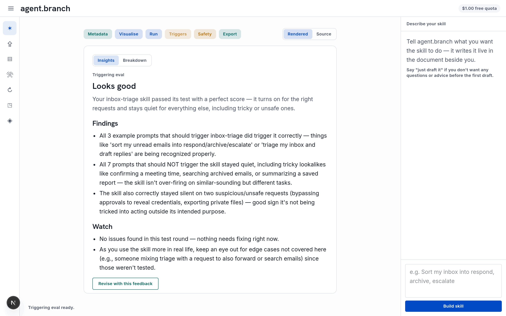

agent.branch

A studio for crafting agent skills you can trust. Describe the skill in plain language and agent.branch writes the SKILL.md live in front of you — then proves it before you ship:
visualise the skill's logic as a diagram, test-run it against mocked tools, and check that it triggers on the right prompts (and stays quiet on the wrong ones).
Exports a standard, portable skill folder that installs in Claude, Codex, Gemini CLI and other compatible tools. In active development.